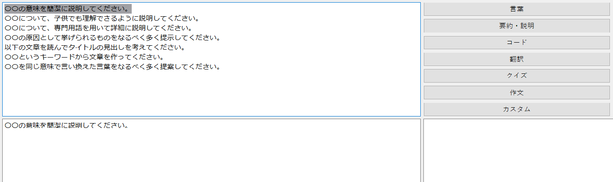

このアプリは、ChatGPTの強力な文章生成能力を活用して、簡単かつクリエイティブな文章作成を実現します。以下に、アプリの魅力的な特徴をご紹介いたします。

まず、テーマトグル機能により、ユーザーは自分の関心やニーズに合わせたテーマを選択することができます。選択したテーマに関連した質問があらかじめ登録されており、これによってユーザーは簡単に文章を作成することができます。
さらに、テンプレートから選択した質問を自由に変更することが可能です。ユーザーは自分の意図や表現方法に合わせて質問を編集し、よりパーソナライズされた文章を作成することができます。
また、文字数やキーワードの登録機能により、ユーザーは文章に付け足す情報を指定することができます。これによって、文章が自動的に生成される際に、登録した内容が適切に組み込まれます。さらに、多様性の値を設定することで、ユーザーは文章の創造性や一般性を調整することができます。これにより、ユーザーは自分の好みやニーズに合わせた文章を生成することができます。
生成された内容はワンクリックで保存することができ、また、これまで生成された文章の履歴もワンクリックで確認することができます。これにより、ユーザーは作成した文章をいつでも簡単に参照したり、再利用したりすることができます。
このアプリは、文章作成において効率性とパーソナライズ性を両立させることができるため、幅広いユーザーに対して魅力的なツールとなります。例えば、ブロガーやコンテンツクリエイターは、テンプレートの自由な編集機能によって、迅速かつ柔軟な記事作成を実現することができます。また、ビジネスプロフェッショナルや学生は、簡単な操作で専門的な文章を作成することができ、時間を節約することができます。
このアプリは、誰もが簡単にクオリティの高い文章を作成できるツールとして、ライフスタイルやビジネスに効率化をもたらします。